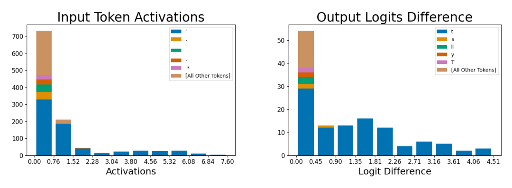

Apostrophe feature for negation contractions ("don't", "won't")

Reading the histogram pair
This uses the same input/output histogram format as the other feature case studies: left shows which tokens activate the feature and how strongly (x-axis, capped around 7.6 here), stacked and colored by token identity with a catch-all '[All Other Tokens]' category; right shows which next-token predictions drop, and by how much, when the feature is ablated from the residual stream. As with the sibling feature in Figure 14, the leftmost, near-zero bin is dominated by the tan 'other tokens' color rather than the feature's true target -- a mix of weakly-activating unrelated tokens a naive reader might mistake for the feature's main identity. The informative region is the string of smaller bars at higher activation, which here are consistently the blue apostrophe token, with almost no other color competing at high activation strength.
What it shows
Beyond low activation, the input histogram is essentially pure apostrophe; the low-activation ticks include period, hyphen, and asterisk rather than the pronoun tokens seen in Figure 14, consistent with this feature triggering in negation-contraction contexts ("don't," "won't," "wouldn't") rather than pronoun-plus-'ll contractions. The output panel is far more concentrated than Figure 14's: the token 't' dominates the suppressed-logit count in essentially every activation-difference bin, with 's,' 'll,' 'y,' and 'T' contributing only minor slivers. Ablating this feature therefore has a narrow, predictable causal effect -- mainly removing the model's prediction of the 't' that closes an "n't" contraction -- in contrast to the broader spread of suppressed endings ('ve, 're, 'm, 's, 'll) seen for the "I'll"-type feature.
Two features, two contraction families
The contrast with Figure 14 is itself the point: the paper singles out these two features specifically because they show that even a single character, the apostrophe, is represented by multiple distinct Dictionary features rather than one, each tied to its own contraction family and each with its own tight causal effect on next-token logits (sparse-autoencoders, §"5.1 INPUT: DICTIONARY FEATURES ARE HIGHLY MONOSEMANTIC", p. 7; §"D.2 EXAMPLES OF LEARNED FEATURES", p. 16). The narrower output distribution here versus Figure 14's broader one shows Monosemanticity is a matter of degree across learned features, not all-or-nothing. Compare the general-purpose Apostrophe dictionary feature (feature 556) case study.